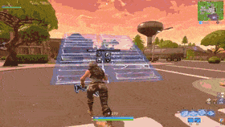
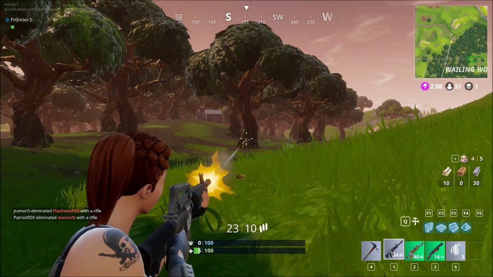

Gameplay
Building
The abilty to build structures is one of the most influential pieces of Fortnite. Unlike Minecraft, building in Fortnite is designed to be used in combat rather than creativity. Building has drastically impacted the skill gap, as it is very difficult to learn, and the meta is ever-changing.
Editing

One somewhat overlooked aspect of Fortnite is the ability to edit pieces you place. This allows players to put a wall up to block a shot, but then create a window in the wall to shoot the other player. In pro-play, there is an emphasis on "owning" as many walls as possible, so you can edit through them to get quick shots off.
Gun Play
Although there is an emphasis on building and editing, the game is still a shooter at its core. The are many types of guns, ranging from snipers to shotguns, just like any shooter. The biggest problem with gun play in Fortnite is bloom: shots fired will not always go to the center of the crosshair, rather they can shoot off at a random angle.
The META
The current meta is box-fighting. Box fighting is used predominantly in competitive play because it is defensive and uses less materials(max 1500 materials, 10 materials per build). Box fighting is based off of quick plays, and players are only in the open for fractions of a second.